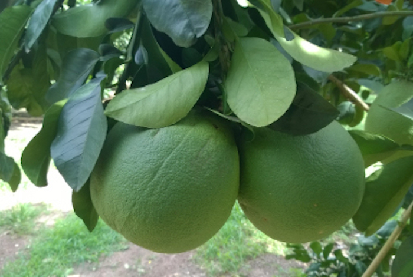
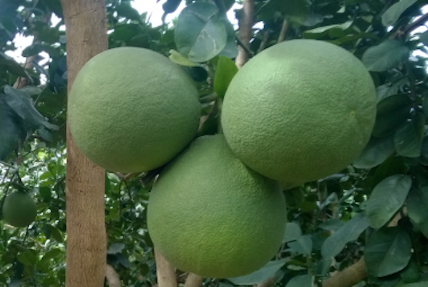
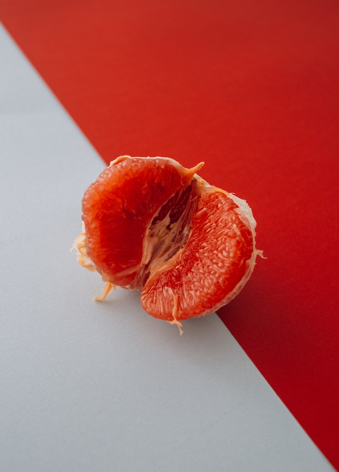
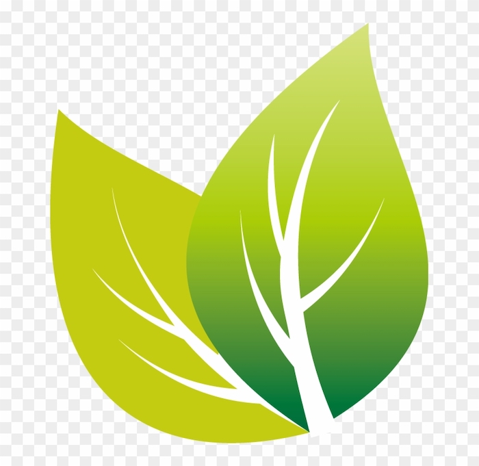
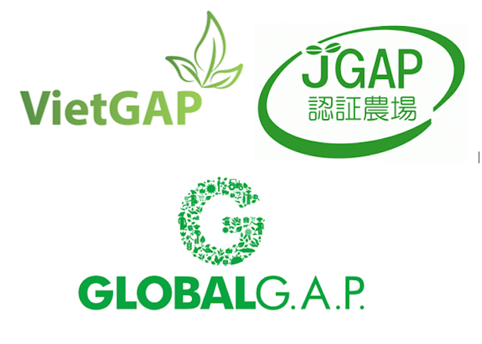
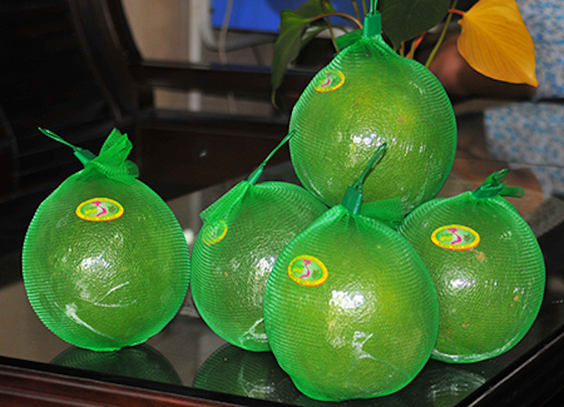

Trang trại bưởi da xanh huyện Bình Chánh được phát triển từ năm 2017. Với sản phẩm chính là trái bưởi da xanh, chúng tôi mong muốn có thể cung cấp những trái bưởi với chất lượng cao nhất, phục vụ nhu cầu trong nước và vươn ra xuất khẩu.
Mục tiêu
Với mục tiêu đưa sản phẩm nông nghiệp Việt Nam tiến ra thế giới, chúng tôi đang nỗ lực để đưa trang trại đạt tiêu chuẩn GlobalGAP vào năm 2020.
Tầm nhìn
Chúng tôi xây dựng tầm nhìn trở thành thương hiệu tầm vóc quốc gia, cung ứng những dịch vụ sản phẩm có chất lượng cao và uy tín, đáp ứng mọi nhu cầu đa dạng của khách hàng trong nước và quốc tế.
Sứ mệnh
Sử dụng ưu thế năng lực và công nghệ hiện đại để thúc đẩy nhanh những tiến trình quan trọng của quản trị doanh nghiệp; tối ưu hoá nguồn nhân lực và chi phí để tạo ra những mô hình linh hoạt nhất.
Thông tin
Dưới đây là nhũng thông tin chi tiết về trang trại và sản phẩm của chúng tôi.
Lịch sử phát triển và kế hoạch tương lai của trang trại
5/2016
5/2016
Bắt đầu triển khai việc trồng bưởi da xanh tại trang trại
12/2016
12/2016
Song song với việc chăm sóc cây bưởi, hệ thống tưới tiêu bắt đầu được triển khai tự động hoá
1/2019
1/2019
Thu hoạch lứa bưởi đầu tiên, với sản lường abc tấn
10/2020
10/2020
Mục tiêu đưa trang trại đạt chuẩn GlobalGAP
1/2021
1/2021
Mục tiêu xuất khẩu sang thị trường lớn như Trung Quốc, EU
Đội ngũ
Chú Năng
Chủ trang trại
Đội ngũ nhân viên của trang trại ngoài kiến thức chuyên môn nông nghiệp còn liên tục được đào tạo, áp dụng những công nghệ mới để nâng cao năng suất.
Liên hệ với chúng tôi
Trang trại bưới da xanh Bình Chánh luôn mong muốn được hợp tác cùng tất cả các đối tác trong và ngoài nước.
Chủ trang trại: Chú Năng
Địa chỉ: Huyện Bình Chánh, Thành Phố Hồ Chí Minh
Số điện thoại: 090xxxxxxx
Email: chunang@gmail.com
Sản phẩm chủ đạo
---

Bưởi da xanh tại Trang trại Bình Chánh được đầu tư công nghệ, hướng tới đạt chuẩn GlobalGAP, bảo đảm vệ sinh an toàn thực phẩm.
Nguồn gốc trái bưởi da xanh
---

Bưởi da xanh là một giống bưởi có nguồn gốc đầu tiên ở xã Thanh Tân, huyện Mỏ Cày Bắc, tỉnh Bến Tre. Trái bưởi da xanh có dạng hình cầu, nặng trung bình từ 1,2 – 2,5 kg/trái; vỏ có màu xanh đến xanh hơi vàng khi chín, dễ lột và khá mỏng (14–18 mm); tép bưởi màu hồng đỏ, bó chặt và dễ tách khỏi vách múi; vị ngọt không chua (độ brix: 9,5–12%); mùi thơm; không hạt đến khá nhiều hạt (có thể có đến 30 hạt/trái); tỷ lệ thịt/trái >55%. Tính đến năm 2009, Bến Tre có diện tích trồng bưởi da xanh là 3.284 ha, với năng suất 9-14 tấn/ha
Giá trị dinh dưỡng của bưởi da xanh
---

Bưởi da xanh không chỉ là một loại trái cây đơn thuần ăn ngon và giàu dinh dưỡng dưỡng, mà còn được đánh giá là loài hoa quả sạch diệu kỳ có thể điều chế nên nhiều bài thuốc phòng và trị bệnh một cách hữu hiệu. Thành phần dinh dưỡng trong một trái bưởi xanh chứa nhiều vitamin khác nhau, các khoáng chất vi lượng cũng như đa lượng, kể cả thêm một số hoạt chất hiếm.
Bình quân trong 100g bưởi da xanh có chứa 59 đơn vị calo năng lượng, 30mg Canxi, 21 mg Phốtpho, 0,7mg sắt. Bên cạnh đó, bưởi da xanh còn chứa nhiều hợp chất vitamin C, các vitamin nhóm A, nhóm B, ... Ăn bưởi như một loại hoa quả sạch, góp phần tăng cường sức khoẻ và hỗ trợ cơ thể thanh lọc phổi, giúp tiêu hóa và lưu thông máu được dễ dàng hơn.
Một giá trị khác cũng được các bác sĩ và chuyên gia y học đánh giá cao ở bưởi da xanh đó là "thần dược" dành cho những bệnh nhân mắc tiểu đường. Theo các công trình nghiên cứu khoá học cho thấy, thường xuyên ăn bưởi, đặc biệt là bưởi da xanh giúp chế tối đa trên 80% nguy cơ mắc bệnh tiểu đường. Đồng thời, đối với bệnh nhân tiểu đường, 3 phần bưởi cho khẩu phần mỗi ngày giúp điều hoà và giảm nồng độ đường trong máu cực kỳ hiệu quả.
Các nhà khoa học còn minh chứng rằng chất lycopene chống oxi hoá trong bưởi có khả năng làm giảm nguy cơ ung thư tuyến tiền liệt một cách hiệu quả. Một thí nghiệm rộng rãi được thực hiện trực tiếp trên 48.000 bác sĩ với chế độ ăn uống với thực phẩm sạch giàu lycopene, trong đó bưởi chiếm một phần quan trọng. Sau vài tuần, kết quả cho thấy trên 50% trong số những người tham gia thì nghiệm hầu như mất hết nguy cơ bị ung thư tuyến tiền liệt.
Không chỉ vậy, bưởi còn cung cấp một lượng lớn chất xơ hữu ích, có tác dụng chống táo bón, và được xem như một loại thực phẩm an toàn bởi nó có thể ngăn ngừa các bệnh đường tiêu hoá bệnh lỵ, tiêu chảy hay viêm ruột non.
Ngoài ra, đối với những người đang áp dụng chế độ ăn kiêng hay tập luyện cũng nên dùng bưởi thường xuyên bởi khả năng "đốt cháy" cực kỳ hiệu quả các mỡ hay calo thừa trong cơ thể. Hiện nay, hệ thống cửa hàng thực phẩm sạch Ếch Xanh có cung cấp những sản phẩm bưởi da xanh nguồn gốc xuất xứ từ Bến Tre. Để có những múi bưởi thơm ngon, giòn ngọt và tươi sạch nhất, các bà nội trợ có thể tìm hiểu và đặt mua hàng tại hệ thống của chúng tôi.Đối với người Việt Nam, bưởi là một loại hoa quả sạch, trái cây dân dã mà ăn ngon. Ngày Tết, trong mỗi gia đình đều không thể nào thiếu một cặp buởi chưng trên bàn thờ ông bà. Đặc biệt, đối với người dân Bến Tre, bưởi da xanh đã trở thành một là loại trái cây quý, không những có giá trị kinh tế mà còn đem đến những giá trị dinh dưỡng ít ai biết.
Thương hiệu bưởi da xanh Bình Chánh
---

Trang trại bưởi da xanh hiện có quy mô hơn 5 ha, tọa lạc tại huyện Bình Chánh, TPHCM.
Để đáp ứng nhu cầu phát triển tốt hơn cho các loại cây trái, từ năm 2016, trang trại đã đầu tư gần cả tỷ đồng để nâng cấp, xây dựng hệ thống tưới tiêu hiện đại cùng với trạm hạ thế, trạm bơm. Hiện nay, trang trại đã có một hệ thống đường ống tỏa khắp cùng với hệ thống bồn nước 30.000 lít để dẫn nước đến tận từng gốc cây bằng công nghệ tưới xòe, không quay. Nhờ xây dựng hệ thống tưới hiện đại, trang trại đã tiết kiệm được 2/3 giá trị đầu tư/mùa so với trước đây, tiết kiệm được 2/3 công lao động và giá trị năng suất lại đạt cao hơn rất nhiều.
Bên cạnh đó, trang trại đang từng bước củng cố lại giống cây trồng để đạt hiệu quả hơn.
VietGap, JGAP và GlobalGAP
---

GAP là viết tắt của cụm từ “Good Agricultural Practices” nghĩa là Thực hành tốt nông nghiệp.
Năm 2008, tiêu chuẩn VietGAP đã chính thức được Bộ Nông nghiệp và Phát triển nông thôn ban hành để áp dụng phù hợp với tình hình thực tế tại Việt Nam, dựa trên 4 tiêu chí như: Tiêu chuẩn về kỹ thuật sản xuất, An toàn thực phẩm gồm các biện pháp đảm bảo không có hóa chất nhiễm khuẩn hoặc ô nhiễm vật lý khi thu hoạch, Môi trường làm việc mục đích nhằm ngăn chặn việc lạm dụng sức lao động của nông dân, Truy tìm nguồn gốc sản phẩm. Tiêu chuẩn này cho phép xác định được những vấn đề từ khâu sản xuất đến tiêu thụ sản phẩm.
Tương tự, JGAP là bộ tiêu chuẩn của Nhật Bản được xây dựng vào năm 2007. Ngay từ khi mới ra đời, JGAP đã được công nhận là bộ chuẩn đạt chất lượng tương đương tham chiếu với GlobalGAP.
GlobalGAP là tiêu chuẩn Toàn cầu do hơn 80 Quốc gia đặt chung và lấy tên là GlobalGap để đề ra tiêu chuẩn chung sản xuất trong ngành Nông nghiệp bao gồm Trồng trọt, chăn nuôi thủy hải sản.
GlobalGAP với hơn 100 tiêu chí kiểm soát, theo đó yêu cầu các nhà sản xuất phải thiết lập một hệ thống kiểm tra và giám sát an toàn thực phẩm xuyên suốt bắt đầu từ khâu sửa soạn nông trại canh tác đến khâu thu hoạch, chế biến và tồn trữ. Chẳng hạn như phải làm sạch nguồn đất, đảm bảo độ an toàn nguồn nước; giống cây trồng, vật nuôi được chọn cũng là giống sạch bệnh bởi nếu giống không an toàn sẽ ảnh hưởng nhiều tới năng suất, chất lượng; phân bón, thuốc bảo vệ thực vật cũng phải đảm bảo là những thuốc trong danh mục, chủ yếu là thuốc có nguồn gốc hữu cơ an toàn cho người sử dụng.
Như vậy sản phẩm nông nghiệp được chứng nhận theo tiêu chuẩn VietGAP sẽ được thừa nhận trên thị trường Việt Nam. Sản phẩm nông nghiệp được chứng nhận theo tiêu chuẩn GlobalGAP hay các tiêu chuẩn tương đương (JGAP) sẽ được thừa nhận trên quy mô toàn cầu, dễ dàng được chấp nhận bởi các nhà phân phối lớn và thâm nhập các thị trường khó tính. Sản phẩm được chứng nhận GlobalGAP sẽ được nhận biết thông qua hệ thống định vị tọa độ địa lý toàn cầu, tham gia hệ thống dữ liệu toàn cầu, đảm bảo truy xét nguồn gốc nên có thể trở thành đối tượng của thương mại điện tử.
Tiềm năng xuất khẩu bưởi da xanh
---

Giống bưởi da xanh này đã được Bộ Nông nghiệp & Phát triển Nông thôn Việt Nam công nhận là giống quốc gia. Bưởi da xanh đã được xuất khẩu sang 50 thị trường khác nhau trên thế giới. Trong điều kiện bình thường quả bưởi da xanh có thể để lâu hơn 15 ngày.